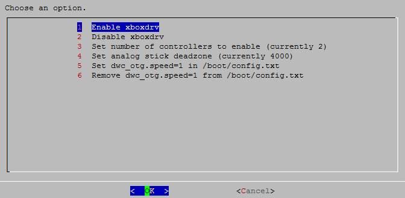

Setting up the XBox360 controller
Pages 143
- Home
- 3do
- Adventure Game Studio
- Amiga
- Amstrad CPC
- Apple II
- Atari 2600
- Atari 7800
- Atari 800 and 5200
- Atari Jaguar
- Atari Lynx
- Atari ST STE TT Falcon
- BIOS
- Building RetroPie Archives
- Cannonball
- CaveStory
- Changelogs
- Child friendly EmulationStation
- Coco
- Colecovision
- Commander Keen
- Commodore 64
- Configuration Editor
- Convert RetroPie SD Card Image to NOOBS Image
- Creating Your Own EmulationStation Theme
- Daphne
- Descent
- Dinothawr
- Doom
- Dragon
- Dreamcast
- Duke Nukem 3D
- EmulationStation
- FAQ
- FinalBurn Alpha
- First Installation
- Game & Watch
- Game Boy
- Game Boy Advance
- Game Boy Color
- Game Gear
- GemRB
- Genesis Megadrive
- Giana's Return
- GPIO Modules
- Intellivision
- KODI
- Limelight
- Lincity
- Logitech controllers
- Love
- lr fba next
- lr mame2003
- Macintosh
- MAME
- Managing ROMs
- Manual Installation
- Marathon
- Master System
- Memory Split
- MESS
- Micropolis
- Minecraft
- Mobile Gamepad
- MSX
- Neo Geo
- Neo Geo Pocket
- Neo Geo Pocket Color
- Netplay
- Nintendo 64
- Nintendo DS
- Nintendo Entertainment System
- Odroid
- OpenBOR
- OpenTTD
- OpenTyrian
- Optimization for Nintendo 64
- Oric
- Overclocking
- PC
- PC Engine
- Playstation 1
- Ports
- PSP
- Quake
- ResidualVM
- RetroAchievements
- RetroArch
- RetroArch Configuration
- RetroPie Arch Linux Flavor
- RetroPie install for OSMC with external memory USB Drive
- RetroPie Ubuntu 16.04 LTS x86 Flavor
- Runcommand
- Running ROMs from a Network Share
- Running ROMs from a USB drive
- Sam Coupe
- Saturn
- Scraper
- ScummVM
- SDLPoP
- Sega 32X
- Sega CD
- Setting up a Bluetooth controller
- Setting up a PS3 controller
- Setting up a PS4 controller
- Setting up an N64 controller
- Setting up the XBox360 controller
- Setting up Wii U Pro controller
- SG 1000
- Shell Style Guide
- Smaller RetroArch Screen
- Solarus
- Sound Issues
- Speed Issues
- Spinners and Trackballs
- Splashscreen
- SSH
- Stratagus
- Super Mario War
- Super Nintendo Entertainment System
- SuperTux
- Supported Systems
- Take and Scrape Your Own Screenshots
- The Ur Quan Masters
- Themes
- TI99
- Transferring Roms
- TRS 80
- Updating RetroPie
- Vectrex
- Video Issues
- VideoPac Odyssey 2
- Virtual Boy
- Virtual Gamepad
- Wifi
- Wiimotes with classic controllers
- Wolfenstein 3D
- WonderSwan
- Wonderswan Color
- Xin Mo Controller
- Xrick
- Zmachine
- ZX Spectrum
- Show 128 more pages…
Wiki Home Page
Getting Started
- First Installation
- WiFi
- Controller Configuration (RetroArch)
- Transferring games (ROMs)
- Scraping Games
- Runcommand Launch Menu
- Getting the right MAME ROMs
- Updating RetroPie
- Using SSH
Emulators
- 3do
- Amiga
- Amstrad CPC
- Apple II
- Atari 2600
- Atari 5200 and 8 bit series
- Atari 7800
- Atari Jaguar
- Atari Lynx
- Atari ST/STE/TT/Falcon
- CoCo
- Colecovision
- Commodore 64
- Daphne
- Dragon 32
- Dreamcast
- FinalBurn Alpha
- Game & Watch
- Game Gear
- Game Boy
- Game Boy Color
- Game Boy Advance
- Intellivision
- Macintosh
- MAME
- Master System
- Megadrive/Genesis
- MESS
- MSX
- Nintendo 64
- Nintendo DS
- Nintendo Entertainment System
- Neo Geo
- Neo Geo Pocket
- Neo Geo Pocket Color
- Oric-1/Atmos
- PC
- PC Engine/TurboGrafx-16
- PSP
- PlayStation 1
- ResidualVM
- SAM Coupé
- Saturn
- ScummVM
- Sega 32X
- Sega CD
- Sega SG-1000
- Super Nintendo Entertainment System
- TI-99/4A
- TRS-80
- Vectrex
- Videopac/Odyssey2
- Virtual Boy
- WonderSwan
- WonderSwan Color
- Zmachine
- ZX Spectrum
Ports
- Adventure Game Studio
- Baldur's Gate
- Cave Story
- Commander Keen
-
Descent
-
Dinothawr
- DOOM
- Duke Nukem 3D
- Giana's Return
- Lincity
- Löve
- KODI
- Marathon
- Micropolis
- Minecraft Pi Edition
- OpenBOR
- OpenTTD
- OpenTyrian
- OutRun Engine
- Quake Series
- Rick Dangerous
- Prince of Persia
- Stratagus
- Super Mario War
- SuperTux
- The-Ur-Quan-Masters
- Warcraft/Starcraft
- Wolfenstein 3D
- Zelda Engine
Advanced Configuration
- EmulationStation
- Custom Splash Screens
- EmulationStation Themes
- Create Your Own Theme
- Configuration Editor
- RetroAchievements
- Netplay
- Overclocking
- Memory Split
- Manual Installation
- Odroid
- Arch Linux
- Ubuntu x86
- Install via NOOBS
- RetroPie install for OSMC with external memory USB Drive
- Favorites and Child-friendly EmulationStation
- Optimization for Nintendo 64
- Running ROMs from a USB drive
- Running ROMs from a Network Share
- Smaller RetroArch Screen
Controllers
- XBox 360 Controller
- PS3 controller
- PS4 controller
- N64 controller
- Bluetooth controller
- Logitech controllers
- Mobile Gamepad
- Smartphone Gamepad
- Wiimotes
- Wii U Pro Controller (Debian jessie only)
- Xin-Mo Driver
- GPIO Controller Modules
- Spinners and Trackballs
Troubleshooting
Developers
Clone this wiki locally
Automatic Configuration (Easiest)
Xpad Driver:
With the recent kernel issues of xboxdrv rendering images unusable, there is an updated xpad driver which will work just as well for xbox controllers, its possible it may also support xbox One controllers.
You access the driver through Manage Packages >> Manage Driver Packages >> Xpad Driver and you'll install it from source. Reboot for good measure, reconfigure your controllers and the lights should work properly.
A complete working config (that was generated from the emulationstation configuration) is listed below at /opt/retropie/configs/all/retroarch-joypads/Xbox360WirelessReceiver(XBOX).cfg
input_device = "Xbox 360 Wireless Receiver (XBOX)"
input_driver = "udev"
input_r_y_plus_axis = "+4"
input_l3_btn = "9"
input_r_x_minus_axis = "-3"
input_l_btn = "4"
input_load_state_btn = "4"
input_start_btn = "7"
input_exit_emulator_btn = "7"
input_l_y_minus_axis = "-1"
input_up_btn = "13"
input_r_y_minus_axis = "-4"
input_a_btn = "1"
input_b_btn = "0"
input_reset_btn = "0"
input_down_btn = "14"
input_l_x_plus_axis = "+0"
input_l_y_plus_axis = "+1"
input_r_btn = "5"
input_save_state_btn = "5"
input_r2_axis = "+5"
input_r3_btn = "10"
input_right_btn = "12"
input_state_slot_increase_btn = "12"
input_x_btn = "3"
input_menu_toggle_btn = "3"
input_select_btn = "6"
input_enable_hotkey_btn = "6"
input_l_x_minus_axis = "-0"
input_y_btn = "2"
input_left_btn = "11"
input_state_slot_decrease_btn = "11"
input_r_x_plus_axis = "+3"
input_l2_axis = "+2"
Xboxdrv Driver
Note! There are known incompatibilities with this driver and the latest kernel, xpad will work best currently.
Access the RetroPie Setup Script and navigate to Manage Packages >> Manage Driver Packages >> xboxdrv

- Enable xboxdrv: This will install the driver and add a start-up configuration in /etc/rc.local
- Disable xboxdrv: This will disable the driver and remove the start-up configuration in /etc/rc.local
- Set Number of Controllers To Enable: Default number of controllers is 2 (If you have more than two controllers, set this first before you enable xboxdrv)
- Set Analog Stick Deadzone: Smaller number = more responsive, Larger number = less responsive.
- Set dwc_otg.speed=1 in /boot/config.txt: May help if controller is being glitchy.
- Remove dwc_otg.speed=1 from /boot/config.txt: Removes the config.
Note that if you have wireless controllers you will need a wireless receiver plugged into your raspberry pi (Official Microsoft xbox360 receiver, or knock offs like zettaguard, VicTsing also work), then to connect:
- press the button on the receiver
- then press the tiny wireless button on the top of the controller
- you may need to repeat for each controller
Controllers need to be turned on before the Pi boots in order to configure properly.
After you have enabled the driver and rebooted you'll need to reconfigure your controller(s) in emulationstation as described on the first installation page
Alternatively if you prefer you can manually install it..
Manual Configuration
RetroPie 3.3 contains a newer xboxdrv at /opt/retropie/supplementary/xboxdrv/bin/xboxdrv - which is preferable over the older Debian package. On older RetroPie images you can install the Debian package.
install it by running
sudo apt-get install xboxdrv
Then you must choose one of the 3 methods below
1 - Multiples instances of xboxdrv
You have to launch multiple instances of xboxdrv (one for each controller)
For example we can edit the file /etc/rc.local to start instances of xboxdrv during boot
Here is an example of what to insert in /etc/rc.local for 4 wireless pads (put this just before exit 0):
xboxdrv --trigger-as-button --wid 0 --led 2 --deadzone 4000 --silent &
sleep 1
xboxdrv --trigger-as-button --wid 1 --led 3 --deadzone 4000 --silent &
sleep 1
xboxdrv --trigger-as-button --wid 2 --led 4 --deadzone 4000 --silent &
sleep 1
xboxdrv --trigger-as-button --wid 3 --led 5 --deadzone 4000 --silent &
(replace the --wid by --id if you use wired controllers)
You must swich-on your pads before booting the raspberry.
Notice the sleep 1 between each instance: this prevents the RPi from setting random controllers with random led status; adjust timing if necessary.
2 - Single command line
Another way is to specify this single command :
xboxdrv -D i 0 --next-controller -i 1 --next-controller -i 2 --next-controller -i 3 --deadzone 4000 --dbus disabled &
3 - init script
The third possibility, you can use an init.d script with the daemon -D Option. Save the follwing content to /etc/init.d/xboxdrv:
#! /bin/bash
### BEGIN INIT INFO
# Provides: xbox-controller
# Required-Start: $remote_fs $syslog
# Required-Stop: $remote_fs $syslog
# Default-Start: 2 3 4 5
# Default-Stop: 0 1 6
# Short-Description: Start XBOX Controller Service
# Description: Start the xboxdrv daemon with several options
# support up to 4 Controllers
### END INIT INFO
# Author: MasteRehm
PATH=/sbin:/usr/sbin:/bin:/usr/bin
DESC="XBOX Controller Service"
NAME=xboxdrv
DAEMON=/usr/bin/$NAME
DAEMON_ARGS="-D -d --deadzone 4000 --dbus disabled --detach"
PIDFILE=/var/run/$NAME.pid
SCRIPTNAME=/etc/init.d/$NAME
# Exit if the package is not installed
[ -x "$DAEMON" ] || exit 0
# Read configuration variable file if it is present
[ -r /etc/default/$NAME ] && . /etc/default/$NAME
# Load the VERBOSE setting and other rcS variables
. /lib/init/vars.sh
# Define LSB log_* functions.
# Depend on lsb-base (>= 3.2-14) to ensure that this file is present
# and status_of_proc is working.
. /lib/lsb/init-functions
do_start()
{
if [ $CONTROLLER_NUM -gt 4 ] ; then
echo -e "\n$CONTROLLER"; exit 1;
fi
start-stop-daemon -S -q -x $DAEMON -- $DAEMON_ARGS $CONTROLLER
# -- This workaround only works with 4 controllers connected. It also is creating a name that
# does not match the minor device node.
# # Workaround: xboxdrv daemon creates /dev/input/js[4-7] device files, if /dev/input/js[0-3] created on startup.
# if [ -x /usr/bin/rename ]; then
# sleep 1
# if [[ `ls /dev/input/js*` =~ /dev/input/js[4-7] ]]; then rename 's/js4/js0/;s/js5/js1/;s/js6/js2/;s/js7/js3/' /dev/input/js*; fi
# fi
# Rather than renaming files, it's better to clear the existing ones by stopping the driver
# and then when you start it again, everything will be correct.
sleep 3
do_stop
sleep 3
start-stop-daemon -S -q -x $DAEMON -- $DAEMON_ARGS $CONTROLLER
}
do_stop()
{
start-stop-daemon -K -o -q -x $DAEMON
sleep 1
}
case "$1" in
start)
log_daemon_msg "Starting $DESC" "$NAME"
do_start
status=$?
log_end_msg $status
;;
stop)
log_daemon_msg "Stopping $DESC" "$NAME"
do_stop
status=$?
log_end_msg $status
;;
status)
status_of_proc "$DAEMON" "$NAME" && exit 0 || exit $?
;;
restart)
log_daemon_msg "Restarting $DESC" "$NAME"
do_stop
case "$?" in
0|1)
do_start
case "$?" in
0) log_end_msg 0 ;;
1) log_end_msg 1 ;; # Old process is still running
*) log_end_msg 1 ;; # Failed to start
esac
;;
*)
# Failed to stop
log_end_msg 1
;;
esac
;;
*)
echo "Usage: $SCRIPTNAME {start|stop|status|restart}" >&2
exit 3
;;
esac
sudo chmod +x /etc/init.d/xboxdrv
sudo update-rc.d xboxdrv start 90 2 3 4 5 stop 90 0 1 6
You will also need a default configuration file. Save the following content to /etc/default/xboxdrv:
# How many Controllers? (support up to 4 Controllers)
CONTROLLER_NUM=2
case $CONTROLLER_NUM in
1) CONTROLLER="-w 0 -l 2 --trigger-as-button --dpad-as-button"
;;
2) CONTROLLER="-w 0 -l 2 --trigger-as-button --dpad-as-button --next-controller -w 1 -l 3 --trigger-as-button --dpad-as-button"
;;
3) CONTROLLER="-w 0 -l 2 --trigger-as-button --dpad-as-button --next-controller -w 1 -l 3 --trigger-as-button --dpad-as-button --next-controller -w 2 -l 4 --trigger-as-button --dpad-as-button"
;;
4) CONTROLLER="-w 0 -l 2 --trigger-as-button --dpad-as-button --next-controller -w 1 -l 3 --trigger-as-button --dpad-as-button --next-controller -w 2 -l 4 --trigger-as-button --dpad-as-button --next-controller -w 3 -l 5 --trigger-as-button --dpad-as-button"
;;
*) CONTROLLER="incorrect amount of controller specified"
;;
esac
To specifiy the amount of controller, edit the variable CONTROLLER_NUM. If you have a wired controller, replace all "-w" occurences with "-i".
It is generally advisable to use the daemon mode, 'cause it uses less CPU and RAM instead of several xboxdrv processes for each controller.
Xbox 360 controller glitchy?
According to this post it might help to add the line dwc_otg.speed=1to the file /boot/cmdline.txt.
Outdated optional manual configs
Xbox 360 Controller button configuration for retroarch and final burn alpha
/home/pi/RetroPie/configs/all/retroarch.cfg
#Player 1
input_player1_joypad_index = 0
input_player1_b_btn = 6
input_player1_a_btn = 4
input_player1_y_btn = 7
input_player1_x_btn = 5
input_player1_l_btn = 10
input_player1_r_btn = 11
input_player1_start_btn = 13
input_player1_select_btn = 12
input_player1_up_btn = 0
input_player1_down_btn = 1
input_player1_left_btn = 2
input_player1_right_btn = 3
input_exit_emulator_btn = 15
input_menu_toggle_btn = 16
#Player 2
input_player2_joypad_index = 1
input_player2_b_btn = 6
input_player2_a_btn = 4
input_player2_y_btn = 7
input_player2_x_btn = 5
input_player2_l_btn = 10
input_player2_r_btn = 11
input_player2_start_btn = 13
input_player2_select_btn = 12
input_player2_up_btn = 0
input_player2_down_btn = 1
input_player2_left_btn = 2
input_player2_right_btn = 3
input exit emulator to exit the emulator and return to emulationstation.input menu toggle to show the retroarch menu (e.g. to set the aspect ratio, save/load the game, etc.)
/home/pi/RetroPie/emulators/pifba/fba2x.cfg (or /opt/retropie/emulators/pifba/fba2x.cfg in some versions)
[Joystick]
A_1=4
B_1=5
X_1=6
Y_1=7
L_1=10
R_1=11
START_1=13
SELECT_1=12
#Joystick axis
JA_LR=0
JA_UD=1
#player 2 button configuration
A_2=4
B_2=5
X_2=6
Y_2=7
L_2=10
R_2=11
START_2=13
SELECT_2=12
#Joystick axis
JA_LR_2=0
JA_UD_2=1
Up to now, I didn't figure out, how to change the configuration from the analog sticks to the digipad. To exit the emulator, press START and SELECT together.
Alternate Controller Configurations
This is what makes the Xbox 360 controller the best for this project.
Copy necessary files: First, copy the files above to your pi. (Remove the .txt extension first of course.) I placed them in /usr/local/ but they could go anywhere.
-
Edit rc.local: Next, you need to edit rc.local so that xboxdrv uses the config files. There a few different possibilities depending on how you are instantiating xboxdrv, so be careful.
2a. If you have this line:
xboxdrv -D i 0 --next-controller -i 1 --next-controller -i 2 --next-controller -i 3 --deadzone 4000 --dbus disabled &change it to this:
xboxdrv -D i 0 --alt-config /usr/local/xboxdrv_player1.cfg --alt-config /usr/local/mouse.cfg --next-controller -i 1 --alt-config /usr/local/xboxdrv_player2.cfg --next-controller -i 2 --next-controller -i 3 --deadzone 4000 --dbus disabled &2b. If you have this line (generated by the xboxdrv install from retropie_setup.sh):
"/opt/retropie/supplementary/xboxdrv/bin/xboxdrv" --daemon --detach --wid 0 --led 2 --deadzone 4000 --silent --trigger-as-button ---next-controller --wid 1 --led 3 --deadzone 4000 --silent --trigger-as-button --dbus disabled --detach-kernel-driverchange it to this:
"/opt/retropie/supplementary/xboxdrv/bin/xboxdrv" --daemon --detach --wid 0 --led 2 --deadzone 4000 --silent --trigger-as-button --alt-config /usr/local/xboxdrv_player1.cfg --alt-config /usr/local/mouse.cfg --next-controller --wid 1 --led 3 --deadzone 4000 --silent --trigger-as-button --alt-config /usr/local/xboxdrv_player2.cfg --dbus disabled --detach-kernel-driver2c. Or, if you are using separate lines like this:
xboxdrv --trigger-as-button --wid 0 --led 2 --deadzone 4000 --silent & sleep 1 xboxdrv --trigger-as-button --wid 1 --led 3 --deadzone 4000 --silent & sleep 1 xboxdrv --trigger-as-button --wid 2 --led 4 --deadzone 4000 --silent & sleep 1 xboxdrv --trigger-as-button --wid 3 --led 5 --deadzone 4000 --silent &Edit them so that they look like this:
xboxdrv --trigger-as-button --wid 0 --led 2 --alt-config /usr/local/xboxdrv_player1.cfg --alt-config /usr/local/mouse.cfg --deadzone 4000 --silent & sleep 1 xboxdrv --trigger-as-button --wid 1 --led 3 --alt-config /usr/local/xboxdrv_player1.cfg --deadzone 4000 --silent & sleep 1 xboxdrv --trigger-as-button --wid 2 --led 4 --deadzone 4000 --silent & sleep 1 xboxdrv --trigger-as-button --wid 3 --led 5 --deadzone 4000 --silent & -
File Permissions: The very last step is to make the .cfg files executable. So run these commands, changing them to reflect the location you placed the .cfg files.
sudo chmod 754 /usr/local/xboxdrv_player1.cfg sudo chown pi:pi /usr/local/xboxdrv_player1.cfg sudo chmod 754 /usr/local/xboxdrv_player2.cfg sudo chown pi:pi /usr/local/xboxdrv_player2.cfg sudo chmod 754 /usr/local/mouse.cfg sudo chown pi:pi /usr/local/mouse.cfg sudo reboot
Now, whenever you press the xbox (guide) button on either controller 1 or 2, it will change the control scheme. For player 1, the controller starts up in normal mode. Hitting the xbox button will change to player1.cfg. Hitting it again will enable mouse emulation. One more time will bring back normal operation. Controller 2 cycles between normal operation and player2.cfg. Controllers 3 and 4 are uneffected.
Here's a little explanation of xboxdrv_player1.cfg (player2 is similar):
Interface | Mapped to | Atari 800/5200 | Commodore |
-------------------------------------------------------------
Right Analog | Arrow Keys | Menu Nav | Menu Nav
Left Analog | Mouse | Movement |
D-Pad | Joystick | | Joystick port 2
-------------------------------------------------------------
A Button | Right Ctrl | | Fire
B Button | Num Pad 0 | Fire | Fire
X Button | Enter | | Return
Y Button | Space | Space | Space
-------------------------------------------------------------
L1 Button | F4 | Start Game |
R1 Button | F7 | |
L2 Button | PAGEUP | |
R2 Button | CAPSLOCK | | Start Game
--------------------------------------------------------------
Start | F1 | Menu | Menu
Back | Esc | Esc | Esc